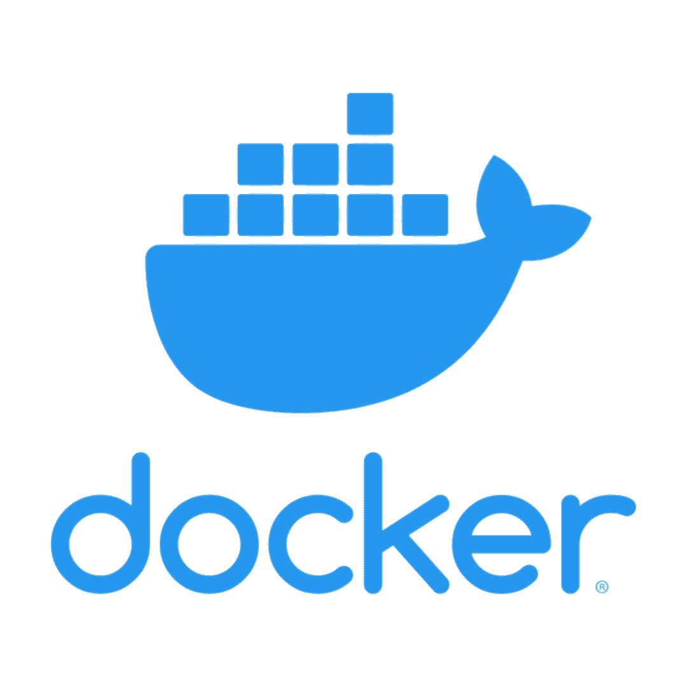

Docker MOOC
--- By Helsinki University ---
What is Docker
Docker is a way to run containers. Containers themselves are a sandbox version of a virtual machine, to put it simply. Theses sandbox's allow you to run a simple program and/or operating system that only does what you need it to do. Depending on the container, you can download video's from Youtube or even run a local LLM.
The Course
The course itself is comprised of 4 modules, each that get you to know Docker better and in what ways. This course
can then be followed up with the Kubernetes (or K8 for job applications) provided by Helsinki University as well.
Both of these courses are great for people that are interested in CI/CD (Continous integration / Continous Delivry)
The course itself is very well balanced with great exercises and the use of GenAI is not restricted however, it is
suggestable to use Docker Documentations own built in AI, which is much more useful than ChatGPT.
Time was not enough
I was able to work my way to Module 1 Chapter 2.3 without any bigger issues and it was starting to look great as I progressed through the exercises. The exercises that I worked with mainly focused on creating a YouTube downloader container with Apache Linux as its base. I was even introduced to the Docker publishing platform Docker Hub. After this was when I started work on a student association GGK. After some time I was severely burnt out on all everything that had happened in the past 12 months and I forgot about the course. I do still intend to work with Docker, especially to create containers that I can run on my computers for my own use.